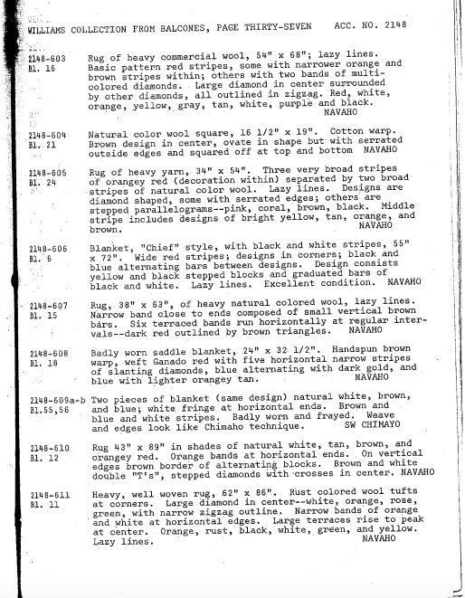
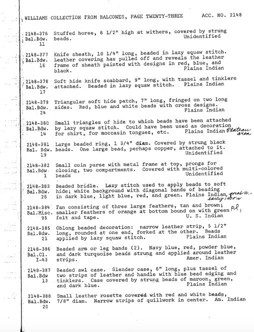
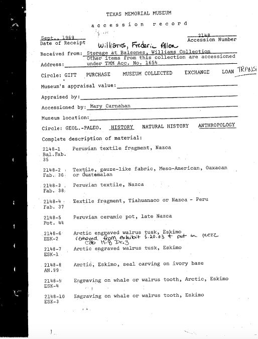
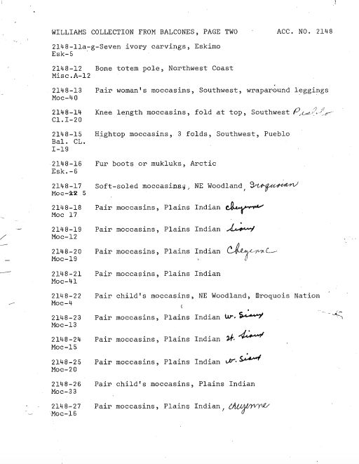

Description
Full accession record of the Frederic Allen Williams Collection upon its arrival at Texas Memorial Museum after being cataloged at the Balcones Center. This record includes the listing for accession group 2148 though additional items from the Williams Collection can be found under "1654". This collection includes textiles from indigenous groups in North and South America, several swords, basketry, cutlery and at least 40 moccasins.



FULL PDF: Accession Records- Williams Collection